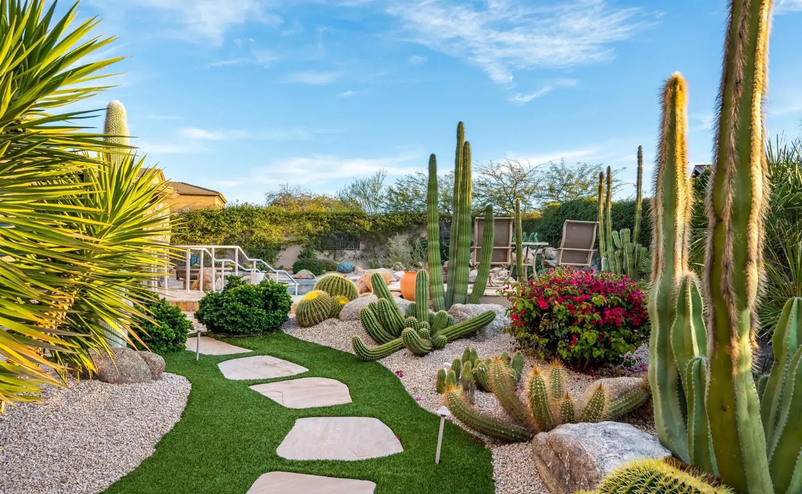
A Yard You're Proud to Come Home To
Red Agave Landscaping designs and builds outdoor spaces for homeowners across the Phoenix metro. Free on-site estimates, honest pricing in writing, and one crew from the first sketch to the final walkthrough.
- Free on-site estimate at your home
- A written proposal before any work begins
- Desert-smart designs that respect your water bill
Get My Free Estimate
Takes about 30 seconds. We reply within one business hour.
That didn't go through
Sorry, your request couldn't be sent. Please call us at (623) 320-6940 and we'll book your free estimate right away.
Thanks, we got it.
Jose's team will reach out within one business hour to schedule your free estimate. Prefer to plan ahead? See how booking works below.
Built for the desert. Designed for your life.
Phoenix yards ask a lot of a landscape. Summer heat, monsoon downpours, and water bills that punish the wrong design. Red Agave plans for all three, so your yard looks finished in August, not just in the brochure.
- One team handles design, build, and cleanup
- Plants chosen for Arizona heat and low water
- Irrigation set up right, so nothing struggles or floods
- Clean job sites, debris hauled away
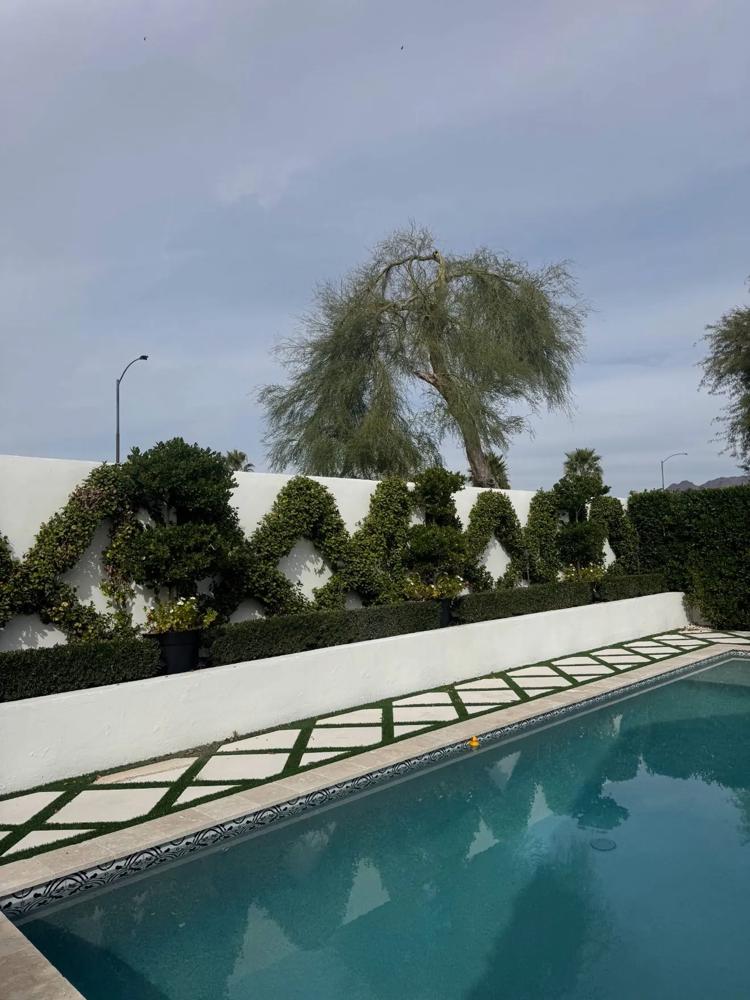
Everything your yard needs, one call away
From a full redesign to a one-time cleanup, every service starts with the same free on-site estimate.
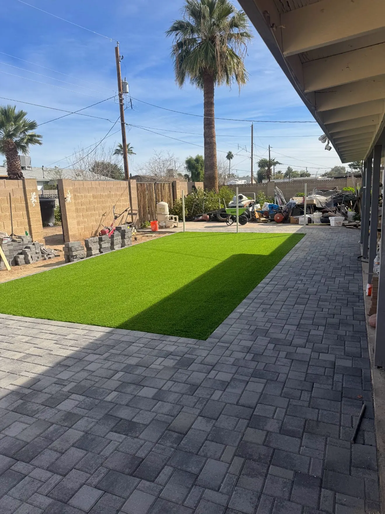
Landscape Design and Installation
Complete yard transformations, planned and planted by one crew.
Explore design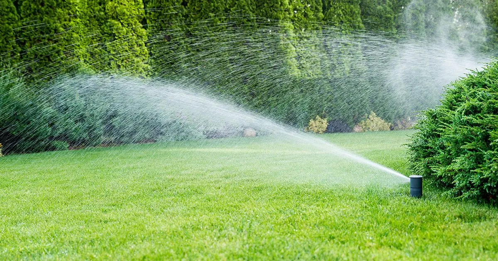
Irrigation and Sprinklers
Drip and sprinkler systems that water deeply and waste nothing.
Explore irrigation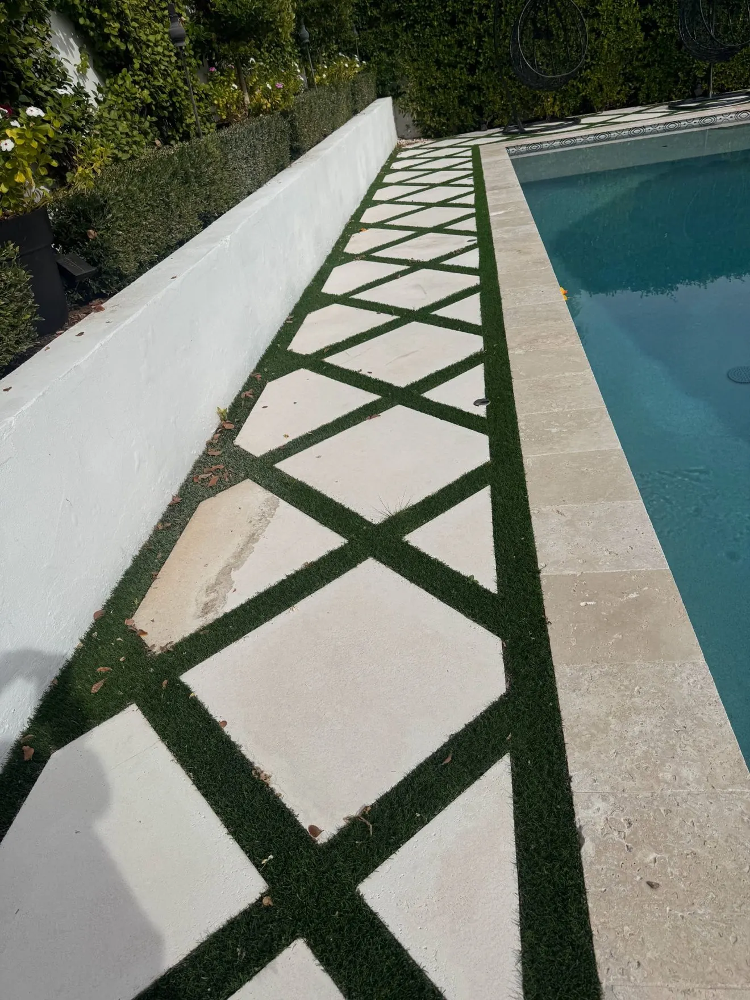
Pavers and Hardscaping
Patios, walkways, and courtyards built to outlast the heat.
Explore pavers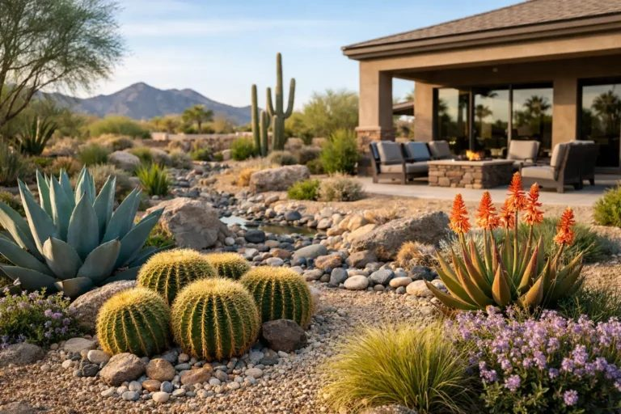
Desert and Xeriscape Conversions
Trade thirsty grass for a desert landscape with real curb appeal.
Explore xeriscape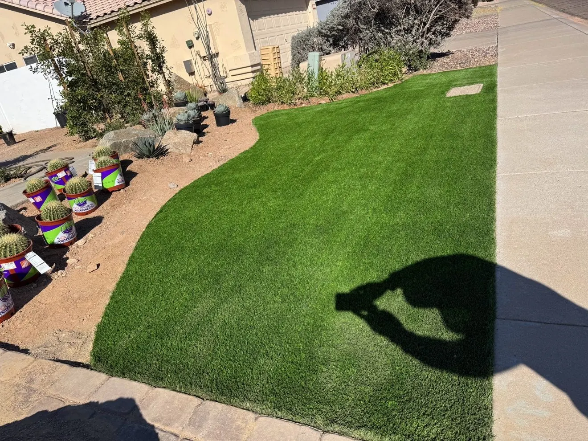
Artificial Turf
Green all year, no mowing, no mud, no reseeding every fall.
Explore turf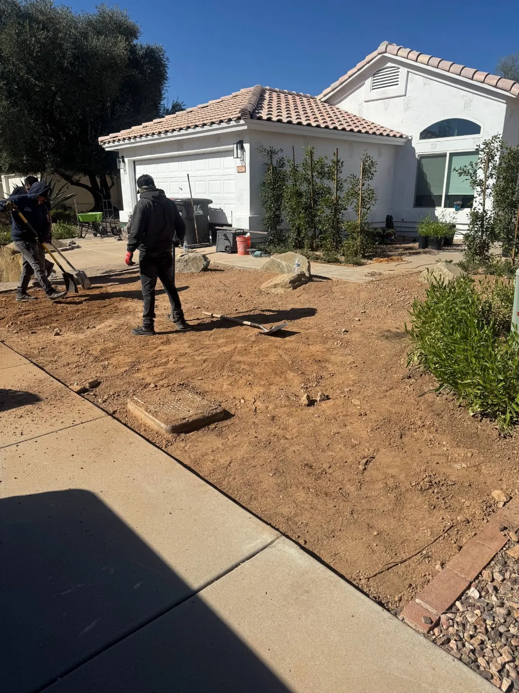
Yard Cleanups and Haul-Away
Overgrown yard? We clear it, shape it, and haul everything away.
Explore cleanups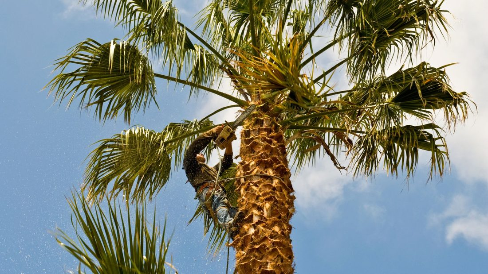
Tree and Palm Trimming
Safe, clean trimming that keeps palms and shade trees healthy.
Explore trimming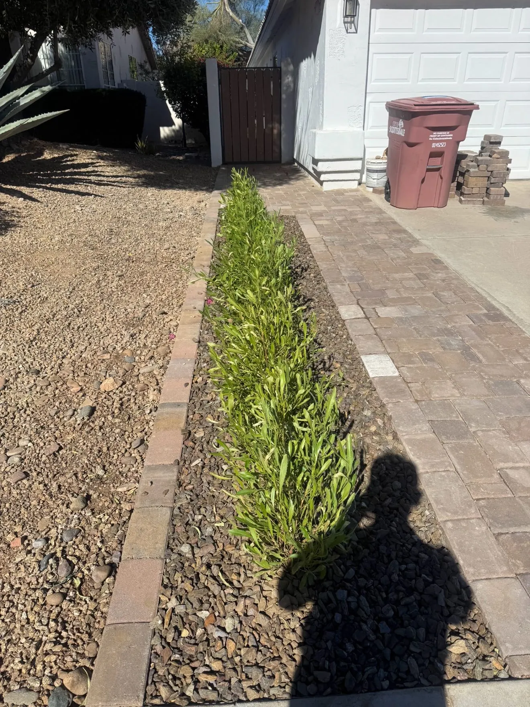
Monthly Maintenance
Scheduled visits that keep the yard sharp without you lifting a rake.
Explore maintenanceFrom tired to transformed
Real Red Agave projects, photographed by the crew on site. Drag the handle on each one — the rest of the story is in the gallery.
Front yard conversion: graded dirt to a curved turf lawn with desert planting. See more transformations
Full backyard build: dirt lot to turf lawn and paver patio.
Side-yard rescue: a dirt path becomes a finished paver walkway.
How it works
Five steps between you and a yard you love. No pressure at any of them.
Request your free estimate
Fill out the short form on this page. We reply within one business hour to set your appointment.
On-site walkthrough
Jose's team walks your property with you, listens first, measures, and photographs what your proposal needs.
Written proposal
You get clear scope and pricing in writing, built around your budget. No obligation, and no work begins before you approve it.
We build it
One crew installs your project and keeps the site clean, with debris hauled away as we go.
Final walkthrough
We walk the finished yard with you, test the irrigation, and only call it done when it looks the way the proposal promised.
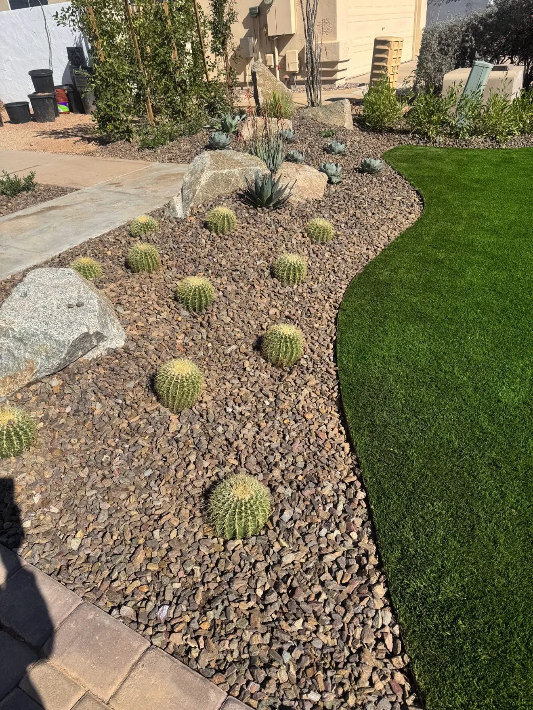
The front yard your neighbors slow down for
Curb appeal is the cheapest renovation there is. A Red Agave front yard conversion pairs sculptural desert plants with clean rock work and lighting-ready layouts, so the house looks cared for from the street, every day of the year.
- Low-water plant palettes with year-round structure
- Rock and gravel beds that stay tidy
- HOA-friendly designs for Phoenix metro communities
Serving the Phoenix metro area
Red Agave crews design, build, and maintain residential yards across the Phoenix metropolitan area. Every project starts with a free on-site estimate at your home, wherever in the metro your yard is.
Not sure if we cover your neighborhood? Put your property address in the estimate form and we will confirm scheduling for your area when we reply.
Questions, answered straight
How much does an estimate cost?
Nothing. On-site estimates are free, and the visit comes with a written proposal. You will know exactly what your project costs before you agree to anything.
What happens during the estimate visit?
We walk the property with you for about 30 minutes, listen to what you want, take measurements and photos, and talk through options and budget. Your written proposal follows, with no obligation.
Can you lower my water use?
Yes. Xeriscape conversions, drip irrigation, and smart scheduling are core Red Agave work. We design planting that thrives on desert water budgets and set your system to match.
Do you maintain yards after installation?
We do. Monthly maintenance covers trimming, weed control, irrigation checks, and seasonal touch-ups, so the yard we build stays the yard you fell for.
How fast will I hear back after I reach out?
Jose's team replies within one business hour. From there we book your on-site visit at a time that suits you, confirm it before we come, and remind you ahead of the appointment.
How does scheduling work?
Send the estimate form and Jose's team replies to lock in a visit time that suits you. We confirm before we come and remind you ahead of the appointment. The visit itself takes about 30 minutes, and your written proposal follows.
What services does Red Agave Landscaping offer?
Landscape design and installation, irrigation and sprinklers, pavers and hardscaping, desert and xeriscape conversions, artificial turf, yard cleanups and haul-away, tree and palm trimming, and monthly maintenance. Every project starts with a free on-site estimate.
Which cities does Red Agave serve?
Phoenix, Ahwatukee, Chandler, Paradise Valley, Peoria, Glendale, Surprise, and Anthem. If you are nearby and not sure, ask — we will tell you straight whether we cover your neighborhood.
What are Red Agave's hours, and how do I get in touch?
We work Monday to Friday, 7:00 AM to 4:00 PM. Call (623) 320-6940, or book your free on-site estimate online any time and we will confirm your visit.
How long has Red Agave Landscaping been in business?
Red Agave is a family-owned Phoenix metro company serving Valley homeowners since 2008. The owner scopes your project in person, and the crew that starts your job finishes it.
How much does landscaping cost in Phoenix?
Honest answer: it depends on the yard, and anyone who prices it sight-unseen is guessing. Around Phoenix, most desert landscaping projects land somewhere between $3,000 and $25,000, and what moves the number is size, materials, access, and what is hiding underground — Valley caliche can add real digging time. We do not quote from a price list. We come out, measure your yard, and put the full price in a written proposal. Book a free on-site estimate or call (623) 320-6940, and you will know exactly what your project costs before you agree to anything.
How much does a paver patio cost — and why do quotes vary so much?
Published Phoenix pricing runs about $14 to $28 per square foot installed, and the gap between a cheap quote and a solid one is usually what sits under the pavers: base depth, edge restraint, polymeric sand, and how much caliche the crew has to break through. A low bid that skips the base looks the same on day one and starts failing in a couple of years. Our proposals spell out the build, not just the surface. Book a free on-site estimate or call (623) 320-6940 and we will price your patio with the base work included, in writing.
Does artificial turf get too hot for dogs in Phoenix?
Turf does get hot in direct Arizona sun — any installer who tells you otherwise is not being straight with you. What makes it workable for dogs is the system underneath: proper drainage so urine rinses through instead of baking in, and odor-control infill so the yard does not smell by August. Most dogs do what they do on pavement — they use it morning and evening and find the shade at midday, and a quick rinse cools the surface fast. If turf is on your list, book a free on-site estimate or call (623) 320-6940 and we will talk through the pet setup honestly for your yard.
Can I get a rebate for removing my grass?
Quite possibly, yes. Phoenix pays $2.00 per square foot for grass removal, Chandler pays $1.50 per square foot (up to $2,000), Mesa offers up to about $2,100, and SRP offers up to $3 per square foot — but every program requires pre-approval BEFORE the grass comes out, so do not start digging first. We handle the conversion itself: grass removal, grading, decomposed granite, and drip-fed desert planting. Book a free on-site estimate or call (623) 320-6940 and we will walk the yard and talk through which rebate your home qualifies for before anything is removed.
How much does monthly maintenance cost, and what is included?
Across the Phoenix market, monthly yard service generally runs $100 to $300 a month depending on lot size and how often we visit — desert yards on an every-four-weeks visit sit near the lower end. Our maintenance covers trimming, weed control, irrigation checks, and seasonal touch-ups, so the yard stays handled without you chasing it. Your exact price depends on your yard, so we set it at a free on-site estimate — book online or call (623) 320-6940 and we will put it in writing.
How much does a one-time cleanup cost after monsoon season?
One-time cleanups in Phoenix average around $372 in Angi's local data, with most falling between $207 and $620 — and a yard that took a real monsoon beating, with downed limbs and heavy debris, can run more. A Red Agave cleanup covers storm and monsoon debris, overgrown shrubs cut back, dead plant removal, and full haul-away, so the yard is actually finished when we leave. Book a free on-site estimate or call (623) 320-6940 and we will price your cleanup after seeing the yard, not before.
How often should palm trees be trimmed in Arizona?
Once a year is the rhythm for most palms, ideally May through July, before monsoon storms turn dead fronds into projectiles. Good trimming removes the brown, dead fronds only — cutting green fronds stresses the tree. Shade trees like mesquite and palo verde follow the same logic: a thinning in May or June cuts wind load before the storms. We fold palm and tree trimming into cleanups and maintenance visits. Book a free on-site estimate or call (623) 320-6940 and we will take a look at your trees.
Why is my water bill suddenly high?
Nine times out of ten in a desert yard, it is a leak you cannot see. Drip systems run in direct contact with the ground, and the most common failure is the poly tubing — roots, rodents, and pressure all work on it. The signs are a bill that jumped, pooling water, soggy spots, or plants drying out on the same line that is flooding somewhere else. Our crews check the whole system — emitters, valves, controller, and lines — and repair what they find. Book a free on-site estimate or call (623) 320-6940 and we will find the leak before the next bill does.
Get your free on-site estimate
Tell us about the yard. We will bring the ideas.